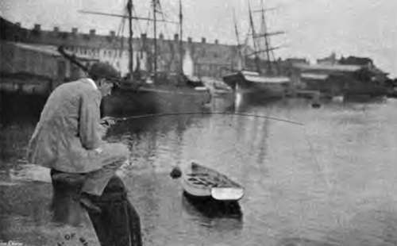
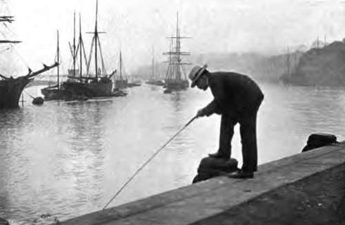

Fishing From Piers And Harbours. Part 3
Description
This section is from the book "Fishing", by Horace G. Hutchinson. Also available from Amazon: Fishing.
Fishing From Piers And Harbours. Part 3
There is a method of fishing from harbours or quays on tidal rivers that is distinct from anything that has previously been described in these sea-fishing notes. It will be more or less welcomed by the novice according to his attitude in respect of bodily exercise, for it is, the aforenamed rock-fishing excepted, about the only form of sea-fishing with which I am acquainted that involves walking about. In some estuaries, like that of the Aran at Littlehampton or the Teign at Teignmouth, the bass come in with the flood tide and rout among the wooden piles for small shrimps or such other food as they can there procure. I never knew this method of fishing to be followed at Teignmouth, for there the drifting in boats out in mid-stream with the living sand-eel bait, as already described, is the only style of bass fishing that seems to answer, though a few fish are also picked up with green crab bait (locally called " peeler-crab ") from boats anchored in the tideway. At Littlehampton, however, where the crab and ragworm are the only baits used, they used to catch bass five years ago-I have not visited the place since-by using a rod and float tackle from the quays on the left bank, close to the railway line, and walking up with the rising tide. It was always enjoined as a most important condition of a good catch that great care should be taken to leave the line slack enough for the float to ride quite naturally on the water and not be disturbed by any sudden pull, but I fancy, from what I remember of the sport, that success was more often deserved than commanded. Whenever a stray bass was taken, there was a rush to see the trophy that indicated the rarity of such a capture.
All the same, one never knows where the bass may, or may not, be feeding, or what bait may tempt them. I was much struck by an article in the Field some time last September, in which, commenting on the fierce arguments that rage around the feeding of salmon in fresh water, the writer gave it as his opinion that sportsmen considered the problem from the too restricted standpoint of the results obtained with the fly, the minnow, and one or two other more or less orthodox baits. There is no doubt that we are apt to generalise from meagre facts. We try bass, for instance, which are known, or thought to be in the immediate neighbourhood, with one or other of the stock baits, the living sand-eel, the soft crab, pilchard, or perhaps ray's liver, and, these failing, we go home and declare that there are no bass. We used to walk solemnly after our floats along those Littlehampton quays, and the soft crab dangled unappreciated on the hook. Yet quite recently, I see in the Fishing Gazette, a Littlehampton fisherman took eight bass in the course of two hours9 fishing, and a year earlier he took just three times as many in the same time, his largest measuring not far short of 20 inches. And how did Mr. Clarence Scott catch his bass ? Why, by throwing out his tackle from the beach, twenty or thirty yards into the sea, using a two-yard gut cast and a leger lead. And the bait ? Simply lugworm.
Where Mr. Scott first conceived the notion of baiting with lugworm for bass I do not know, but it is about the last bait that one would think of using where, for instance, living sand-eel was to be had. Yet if we too had baited with lugworm and cast out from the beach during that weary and fish-less September of 1897, instead of fooling up and down the quays with the wrong tackle and the wrong bait, even we should have taken bass and rejoiced accordingly.
The sand-smelt, or atherine, is so excellent when fried that many amateurs used willingly to devote an hour or two to its capture in the warm summer months before the British climate became what it is. In the year of grace 1903, however, these little fish were so scarce, appearing in twos and threes where they had formerly been seen regularly each summer in their hundreds, that it was not worth while fishing for them. If, perchance, our summers resume their old-time fairness, some fun may be had fishing for " smelts " as they are invariably called, the true smelt, a small cousin of the salmon, being quietly ignored. The correct tackle for the sand-smelt is a very fine hand-line of silk or twine, a small pipe-lead, weighing perhaps a quarter of an ounce, two yards of the .finest gut, such as would be used in fresh water for roach, and a tiny hook, also of the size used for roach. The lead is attached between the line and gut, and the hook comes last of all. It is baited with a fragment from a mussel, the yellow part that lines the shell being best liked by the fish but least easy to keep on the hook, and the whole is then carefully let down amid the little fish, which, on favourable days are seen playing beneath the pier. If they are biting shyly, the following tactics are adopted to whet their jaded appetites. The baited hook is allowed to sink rapidly through their midst until close to the bottom, and the line is then hauled slowly in, hand over hand, in a series of jerks. These manoeuvres have a wonderful effect in quickening the greed of the atherines, which dash at the bait each time. I have seen a skilful smelt-fisher, a lady by the way, hook one at each haul forty or fifty times running, a catch of a hundred being not uncommon in a morning's fishing. Years ago I used to catch these sand-smelts, in company with sand-eels, on a very light trout-rod off Bournemouth pier, but it is long since I spent a summer at that beautiful resort, and, though I pass a portion at any rate of every winter there, the "smelts" are gone with the swallows, or a little later, and I do not know how that pier, once second to none for its smelt-fishing, figures nowadays in the sport. These little atherines are very tender in the lip and may easily drop off the hook, so that care should be taken to keep them away from the posts, contact with which invariably prompts them to another struggle for liberty, and also, once they are hauled to the pier stage, they should be removed from the hook over the fishing-bag or basket, else, so quick are their movements, the chances are they will drop back through the open gratings. There used in the old days to be a tradition to the effect that just as one sets a thief to catch a thief, and uses mackerel to catch mackerel, so smelt was the best bait for smelt. I certainly remember making some good catches with this bait, but of late years I have noticed, down in Devonshire, that mussel answers the purpose admirably. A fragment of ragworm is also a very killing bait at times.
95. - A "Perch"
90. Off A High Pier
Continue to:
- prev: Fishing From Piers And Harbours. Part 2
- Table of Contents
- next: Fishing From Piers And Harbours. Part 4